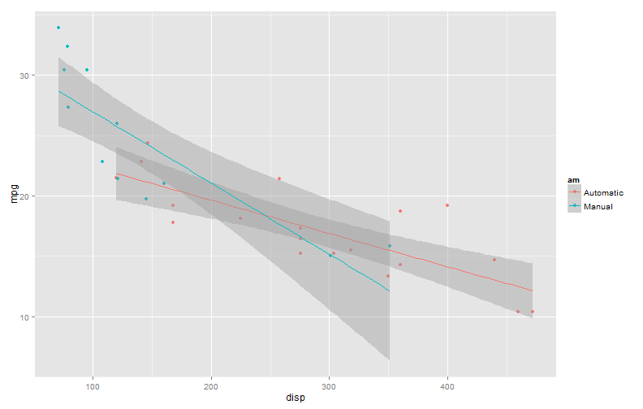

- Not so many cars in the dataset
Not so many parameters
Pretty much tidy dataset
Good to learn plotting and other things
rs-coursera
Coursera Student
Not so many parameters
Pretty much tidy dataset
Good to learn plotting and other things
We can start learning about the data
head(mtcars)
## mpg cyl disp hp drat wt qsec vs am gear carb
## Mazda RX4 21.0 6 160 110 3.90 2.620 16.46 0 1 4 4
## Mazda RX4 Wag 21.0 6 160 110 3.90 2.875 17.02 0 1 4 4
## Datsun 710 22.8 4 108 93 3.85 2.320 18.61 1 1 4 1
## Hornet 4 Drive 21.4 6 258 110 3.08 3.215 19.44 1 0 3 1
## Hornet Sportabout 18.7 8 360 175 3.15 3.440 17.02 0 0 3 2
## Valiant 18.1 6 225 105 2.76 3.460 20.22 1 0 3 1
summary(mtcars)
## mpg cyl disp hp
## Min. :10.4 Min. :4.00 Min. : 71.1 Min. : 52.0
## 1st Qu.:15.4 1st Qu.:4.00 1st Qu.:120.8 1st Qu.: 96.5
## Median :19.2 Median :6.00 Median :196.3 Median :123.0
## Mean :20.1 Mean :6.19 Mean :230.7 Mean :146.7
## 3rd Qu.:22.8 3rd Qu.:8.00 3rd Qu.:326.0 3rd Qu.:180.0
## Max. :33.9 Max. :8.00 Max. :472.0 Max. :335.0
## drat wt qsec vs
## Min. :2.76 Min. :1.51 Min. :14.5 Min. :0.000
## 1st Qu.:3.08 1st Qu.:2.58 1st Qu.:16.9 1st Qu.:0.000
## Median :3.69 Median :3.33 Median :17.7 Median :0.000
## Mean :3.60 Mean :3.22 Mean :17.8 Mean :0.438
## 3rd Qu.:3.92 3rd Qu.:3.61 3rd Qu.:18.9 3rd Qu.:1.000
## Max. :4.93 Max. :5.42 Max. :22.9 Max. :1.000
## am gear carb
## Min. :0.000 Min. :3.00 Min. :1.00
## 1st Qu.:0.000 1st Qu.:3.00 1st Qu.:2.00
## Median :0.000 Median :4.00 Median :2.00
## Mean :0.406 Mean :3.69 Mean :2.81
## 3rd Qu.:1.000 3rd Qu.:4.00 3rd Qu.:4.00
## Max. :1.000 Max. :5.00 Max. :8.00
cor(mtcars[,1:5])
## mpg cyl disp hp drat
## mpg 1.0000 -0.8522 -0.8476 -0.7762 0.6812
## cyl -0.8522 1.0000 0.9020 0.8324 -0.6999
## disp -0.8476 0.9020 1.0000 0.7909 -0.7102
## hp -0.7762 0.8324 0.7909 1.0000 -0.4488
## drat 0.6812 -0.6999 -0.7102 -0.4488 1.0000
fit<-lm(mpg~am+cyl+disp, data=mtcars)
summary(fit)
##
## Call:
## lm(formula = mpg ~ am + cyl + disp, data = mtcars)
##
## Residuals:
## Min 1Q Median 3Q Max
## -5.086 -1.783 -0.484 1.599 6.636
##
## Coefficients:
## Estimate Std. Error t value Pr(>|t|)
## (Intercept) 32.9169 2.7791 11.84 2e-12 ***
## am 1.9287 1.3397 1.44 0.161
## cyl -1.6182 0.6994 -2.31 0.028 *
## disp -0.0156 0.0107 -1.46 0.154
## ---
## Signif. codes: 0 '***' 0.001 '**' 0.01 '*' 0.05 '.' 0.1 ' ' 1
##
## Residual standard error: 3 on 28 degrees of freedom
## Multiple R-squared: 0.776, Adjusted R-squared: 0.752
## F-statistic: 32.4 on 3 and 28 DF, p-value: 3.06e-09
